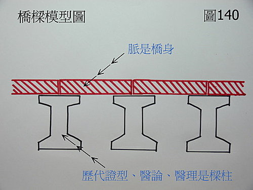

脈理醫理學 31.2：藥王脈學重要醫理脈理模型‥‥‥橋樑模型圖‥‥解釋「脈」和「證」之間的關係和聯合運用（二）
作者：陳建元
〈圖140〉是〝橋樑模型圖〞，用來解釋「脈」和「證」之間的關係和聯合運用。一座橋樑的組成，有「樑柱」和「橋身」兩個部分，如此才能構成一座完整的橋。如果只有樑柱而沒有橋身，則橋的上面根本無法通行，如果只有橋身而沒有樑柱，那橋身也架不起來。樑柱是什麼呢？樑柱就是歷代典籍所留下的「各種證型」和資料，譬如桂枝證、白虎證、少陽證‥‥‥，脾虛證、心肝血虛證、腎氣不足證、濕熱證、氣滯證‥‥‥，這些都是樑柱，「橋身」又是什麼呢？橋身就是脈法，脈法必需要和「證型」結合，才能構成一座完整的橋。各種證型是基柱，脈法則是用來作為基柱與基柱之間的連結，沒有樑柱行不通，沒有橋身也一樣行不通。

臨床是千變萬化的，歷代典籍能告訴我們的東西，都是所謂的「標準典型」，標準典型是指最具代表性的模型。但臨床上不典型的情況更多。譬如桂枝證可轉入白虎證，桂枝證是用桂枝湯，白虎證是用白虎湯，那桂枝證轉到一半，已脫離桂枝，但尚未進入白虎，這又是什麼呢？又該如何用藥呢？這就是所謂的不典型，只學證型的人，無法活用，依樣畫葫蘆，在桂枝或白虎中挑一個，會用脈來連接二者的人，則會發現在桂枝的浮緩脈到白虎的洪實脈之間，有著一連串的脈象變化，桂枝到白虎之間，並不是直接跳過去，而是有好幾個亞型夾在中間；譬如桂枝證俱悉，浮按脈雖浮緩，但中按卻是洪大，這是桂枝表症尚未解，白虎裡證已漸成，治用桂枝湯中加石膏；相反的，譬如脈洪實大的白虎脈俱悉，患者卻還有鼻塞、惡寒的現象明顯，這是白虎證中，尚有表邪未淨，治用白虎湯中加桂枝或麻黃。上面一個是用脈參證，一個是用證參脈，不管是脈參證或是證參脈，總之就是兩者互參。又譬如桂枝證俱悉，但患者除脈浮緩之外，兩尺又特別弱，這是桂枝證兼下焦虛；譬如桂枝證俱悉，但患者除脈浮緩之外，左寸又特別弱，這是胸痺心悸的人患桂枝證，此時，《傷寒論》與《金匱》需要合看，桂枝湯中加薤白，重用炙甘草。譬如白虎外證俱悉，高熱、面紅氣盛、舌乾紅或乾膩，唯諸脈無力，這是白虎證發熱太久，身體代償漸失，《內經》說「壯火食氣」，氣血被燒灼而削弱，所以洪實脈漸轉成虛而無力，治用白虎湯，加入較大劑量的高麗參或西洋參。這也是要以脈參證，或是以證參脈，兩者合參，才能摸清各種證型衍生出去的「變型、亞型、不典型、兼夾型」，才有辦法做到精確用藥。
這種現象不只出現在《傷寒論》中，歷代的任何典籍都是這個樣子，譬如《景岳全書》中，論治男子「陽痿」者，有三條病機（即現代所謂的證型）：1.命門火衰 2.脾腎虧損 3.肝腎濕熱，然以醫理來推論，命門火衰日久可上溯脾胃，而變成脾腎虧損；而脾腎虧損日久者，病變也可以下及成命門火衰；而脾腎虧損者，因為氣虛不暢，日久也可生濕而成肝腎濕熱，所以，兩兩之間必然有許多的亞型，甚至濕熱日久，又會生痰、夾瘀、化毒，而夾入諸證型中。
譬如葉天士《臨證指南》醫案中，我們看到葉天士論「胸痺」，主要有四條病機證型：1.胸脘清陽不運 2.寒濕鬱痺 3.脾胃陽虛 4.血絡痺痛。然以病理來推論，心肺氣虛清陽不運者，日久必然氣血不暢，所以會進一步演變成血絡痺痛；心肺氣虛清陽不運者，因為日久火不暖土，也可以導致脾胃陽虛；而脾胃陽虛者，因為營氣不足充養心肺，日久也可以心肺氣虛；而脾胃陽虛者，又難免生出寒濕。所以也會有許多的亞型、不典型，夾雜在四條病機的中間，而四條病機，也可不斷的融合或變化。
臨床千變萬化而複雜，唯有脈證合參，辨證論治才能周全、精準、而不會遺漏。
《內經》中的學問，是脈證醫學。《傷寒論》的篇名，篇篇都冠上病脈證並治字樣。仲景說：「觀其脈證，知犯何逆？隨證治之」，在在都顯示中醫自古以來，脈證是關鍵處，缺一不可，學中醫需要學些什麼，再清楚不過了。但傳承到後代，不知怎麼的，這個「脈」字，忽然不見了，一些奇怪又弔詭的說法則滿天飛，有些人鼓吹把脈不重要，然而沒有脈而只有證的中醫，就像只有樑柱，而沒有橋身，這像什麼呢？這像用一張網目大得像籃球的網子在撈魚，效果會好嗎？有些人更奇怪，鼓吹只有《傷寒論》重要，歷代其他典籍都不重要，這也是用一張網目大得像籃球的網子在撈魚，但漁網的面積又比別人小。上面可以看到葉天士論「胸痺」、景岳論「陽痿」，這些後代醫家的經驗總結，論說常有創新和發揮，講出《傷寒論》中沒有歸納，沒有記載的東西，試想，如果你不去參考後代醫家的歸納和創新資料，是不是如同你的漁網不但網目稀疏，而且面積又比別人的更小些，更不易抓到魚？西醫的資訊常常在翻新，中醫又何嘗不是？代代醫家有新見解，也有發明，對古人有敬意誠當嘉獎，但泥古媚古，凡事必古是今非，只是停滯不前，故步自封而已。
很多人學中醫，幾十年無成就，學生畢業，開藥效果不佳，問題在哪裡？就是出在這裡，網目大得像籃球的網子怎麼撈魚呢？有人說，只要把《傷寒論》苦讀幾千遍，就會悟出真理，就有奇蹟，可能嗎？一張漏洞百出的漁網，就是掛起來天天焚香膜拜，終究還是一張破漁網。這就是一個關鍵點，古中醫系統中，脈證缺一不可，能合脈證，就能活用，如此一來，每本典籍都是活的，都是有用的，無法合脈證，依樣畫葫蘆，歷代典籍只是一張破漁網，也是只有樑柱而沒有橋身的橋，能發揮的實在有限，誇說能發揮什麼大功用，只是自欺欺人而已。
矯枉過正一樣糟糕，相反的，有的人發現脈很好用，於是棄證從脈，鼓吹把陰陽八綱、太陽少陽這些東西通通丟掉，看病只用脈來看，並認為脈法是另外一個世界，和證的世界不相干，並認為歷代的資料，幾乎都是垃圾不必看，這又是從一個極端，走向另一個極端，矯枉過正，一樣糟糕，只有橋身而沒有樑柱，一樣構不成一座橋。每個樑柱給你的，都是提示某些病種，在思考上，治療上的大方向，這是歷代的經驗總結，不讀不看，臨床純憑脈只是天馬行空，抓不住重點，沒有歷代醫家推著你往上爬，個人天賦就是有多聰明，限於生命只有數十年，所知仍是非常有限。譬如讀了歷代典籍，先知道桂枝證失治化熱後，容易轉去白虎證，先知道三陽三陰的發展輪廓和規律，那在治療外感時，手下把的雖是脈，但心中更能篤定和驗證。譬如知道葉天士論「胸痺」、景岳論「陽痿」，有總結出某些病機規律，那當我們把脈時，心中先有個底，就可以優先診察這些病機的所在部脈，對這些部脈會特別留意。所以說，脈證是一體的，證幫脈，脈幫證，缺誰都不對。又譬如諸代醫論，每每有一些獨特的醫理醫則，足以改變最後的用藥方向，這些結論，也不是單純憑脈看病，就能考慮周全的。譬如醫論中有「大小不利先治標」、「先治卒病、後治痼疾」的治療規律，雖然病人的脈象，顯示患者有消渴三焦火旺的問題，但若是遇到患者兼有感冒或小便不通的急症時，卻必須先從解表或理氣利水先下手。譬如葉天士說：「久病入絡，必加蟲蟻搜剔。」這是一個醫理規律，患者一樣是澀脈，但病程只要日久不癒，就應該提高活血藥的等級，把桃仁、紅花之類的，改成地鱉、水蛭之類的，效果才佳。譬如患者脈浮緩脈，本是桂枝證，但看患者舌紅甚，從《傷寒論》中的記載，知道患者有轉去白虎證發燒的傾向，脈雖沒顯示，典籍卻有記載疾病發展的規律，所以可以另外開幾包白虎退燒藥，讓病患拿回家預防，有發燒就把這包加進去，沒發燒就依原藥來吃即可。一些用藥規律與法則，散見於歷代諸典籍中，並不顯示於脈象上。
證是樑柱，脈是橋身，棄證只憑脈，是學問無本，歷代經驗非常珍貴，卻不知拿來當成借鏡，見識必然狹隘。理、法、方、藥，是整個用藥的過程，方和藥是借著「法」來立論的，而法又根源於「理」，理是什麼？理就是醫理、道理、醫則，就是中醫的傳統醫理，就是辨證論治的獨特系統，這就是中醫的根本，離開了這個根本而去研究中醫，到頭來只能走上西醫西藥的研究路線，沒有堅實巨大的傳統醫理當後盾，只是棄醫存藥，於是，桂枝的功用，縮小範圍變成只是用來擴張末稍的微血管來解表（傳統辨證論治中，桂枝有六大功用→→和營、通陽、利水、下氣、行瘀、補中）；發炎就是用清熱解毒藥（傳統辨證論治中，有毒用清熱解毒藥，但發炎不一定有毒，有毒也不一定會發炎）；五味子變成用來養肝（傳統辨證論治中，肝脈虛散配用五味子能收澀，可輔助其他藥物如當歸之類而收澀外散的肝氣肝血，或用來收澀肺氣、腎氣。但如果肝、肺、腎有濕熱濕痰，用之反而會加重濕熱濕痰）；健步丸每天服用十五公克，經過三個月後，骨質密度可增加百分之二比例，所以骨質疏鬆可吃健步丸（不用辨證論治來治療，如此用藥或許對某些人有效，但無效的一定也不少）；紅景天、刺五加、人參根據研究，可提高人體含氧量的藥物，所以吃這些可保養人體（不經辨證，亂吃這些東西，只是製造出更多的人參證候群）；補陽還五湯治療中風後復原有效，但至少要吃六個月以上（如此用藥，要再度中風的機率也不小）；十全大補湯，有抗癌作用，可以明顯改善大腸癌或胃癌化療後引起的疲乏力及食慾不振等副作用，所以可作為癌後補養（莫名其妙）；人參根據實驗，會使癌腫變大，所以癌腫時不能用人參（又栽在片面不成熟的單一報告之中）。事實上，用這種西藥式的用法來用中藥，效果並不佳，為什麼呢？我們不否認藥物分析和研究，對促進中醫現代化有貢獻，但問題是這些科學研究成熟了沒？是否能取代中醫藥物用人體實驗千年後，才總結出來的規律。事實上，這些說法和報告，常常不到幾年就改來改去，並不是最終的結論，使用這些不是最終結論的結論來用藥，效果當然不佳，可參考這篇→→脈理醫理學 61.1：選藥不精（二）‥‥科學的中藥功效分析並不能替代本草中所說的中藥功效分析。
丟棄用人體實驗千年，不斷修改整合，好不容易才累積起來的中醫傳統醫理醫論，而用現代尚未整合完全、修改完美的生理學、診斷學、‥‥‥，來全盤解釋中醫的脈理、醫理、藥理，必然會產生許多莫名其妙的結論，而自己嚇自己，譬如西醫認為過敏是一種體質，用藥無法根治，故用西醫的醫理來看待中醫時，也會先入為主的認為過敏性鼻炎、濕疹‥‥‥，這類疾病中醫不能醫，但事實上，這類疾病是中醫的強項，成功醫案到處可見。譬如西醫認為功能性的病變吃藥可以恢復，但器質性的病變很難吃藥恢復，要用外科手術才佳，故以這種觀點來看待中醫時，也會認為是這樣子，但事實上，器質性的病變，中醫也有不少強項，萎縮的萎縮性胃炎、突出的子宮肌瘤‥‥‥，不少器質性病變是可以治療的。譬如菜花、疣、‥‥‥，這類西醫認為外科手術才有辦法的疾病，中醫卻有辦法用藥物來消除掉。太多的疾病項目，都顯示丟掉傳統的中醫醫理，就是丟掉中醫的優勢。
或問：老師你好。同一種病症，每個醫家列出的病機可能有好幾種（所以老師你才建議我們先從大陸出版的內科學先下手？？？）
答：對。
因為這些現代內科學，很多已經把各家證型都收在一起了，有其方便性。我們的脈法是放射出去的，但這些證型是內收回來的，放射得太散，容易漫無目的；內收得太緊，又變成死板固執，一收一放會較有重點。因為會有亞型、不典型，所以看這些樑柱時，並不需要看得太細，那樣太浪費時間（有時間或有疑問時，再詳查各家細論），主要是抓幾個樑柱，有個整體輪廓即可，然後再把這些輪廓整合到脈法的架構中，這樣子大有助益。
或問：陳老師，科學不是很好嗎？為什麼我們不把中醫導向科學的道路呢？
答：
科學當然是正確的道路，也是中醫必然要走的道路，這個很正確，而且中西研究的人體都是一樣的，走到後來必然會相合在一起。但問題是：目前可以給我們多少已經成熟的科學呢？能給我們多少證據來說明科學下的中醫（用免疫、生化、自由基、血球、病毒、脈波、脈頻、傳導‥‥‥，來取代原古中醫的內涵），更具有實用性價值呢？現今中醫教育體系中，不乏把中醫醫理藥理全盤捨棄，然後全盤採用西醫來解釋的人，在學校中，中醫系的學生，讀的西醫書不會少於中醫書，對於西醫的學識比中醫更清楚，更不用說中西雙修的學生了，現今中醫教育，既定政策本來就是把中醫西醫化（不是科學化），從來不乏用西醫來講解中醫，也就是所謂的西醫式的中醫人才，結果行得通嗎？效果又如何呢？大家心知肚明。
在我們的部落格中，不排斥西醫，很多地方都用現代醫學來解釋，甚至對很多脈法的講解中，已經整個打通串連到西醫的病名中去了，一直在做中西醫結合的動作（中西醫結合必須是本質上的結合，不是中西醫混合、攪和、湊合，不是西醫打頭陣，中醫做陪襯，也不是西醫診斷，中醫治療）。這種取捨，基本上是這樣子：如果說某部分的西醫學說已經成熟了，和中醫的學說醫論可以彼此貫通接軌，那這部分用西醫醫理來解釋是可行的，但如果兩種學說矛盾互相牴觸，則還是採用原中醫古醫論比較保險。中醫是經驗醫學，醫論則是經驗反覆實驗後的總結，這是直接連繫臨床的，更具實用性、權威性、真實性。
中醫要套用現代醫學的說法之前，一定還要再加驗證過，看是否真的符合臨床現象，方能放行取用，如果以為現代醫學說了就算，不分青紅皂白套用，臨床上保證一定翻船，效果必差！這種情況對在學校中的學生，因為尚未進入實際臨床，很難理解這是怎麼一回事，對冠上「科學」兩個字的東西，全盤接受，並無審思招架的能力（沒有再回頭去仔細檢查，實驗的設計是否粗糙、深入程度不夠），但只要出來臨床幾年，就會發現科學中，還分許多等級→→偽科學、尚未成熟的科學、已經成熟的科學‥‥‥。而醫學，目的是在救人，實用為上，人命關天，不開玩笑，中醫學是一種技術，技術必須根植於臨床事實和現實，對於已經完全成熟科學的這部分可以背書，對未成熟科學這部分則不宜採信（目前科學無法證明的事情，以後的科學未必無法證明。目前雖未能證明，但對於事證頭尾印證，因果呼應明顯者，宜採用臨床事實經驗為操作準則，科學方面則留待後人日後研究再證明即可，不須要現在硬要強出頭，以偏蓋全）。
下面舉幾個簡單的例子來看，更能明白：
譬如用白虎湯或石膏退熱，做過兩三年的中醫都知道而且有經驗，石膏一物，對大部分的發熱而言，效果是確實的，近賢張錫純對石膏的退熱效用，也大加讚賞，證明其功效。但若是依現代藥物分析呢？不少科學結論，都說無法證明石膏有解熱的功效。你要信誰呢？如果科學結論是正確的話，那古今中醫治過發燒都是騙人的，《傷寒論》中的白虎湯也是騙人的。在這邊如果你相信科學的話，結論就是遇到發燒的案例時，馬上舉白旗投降，說：中醫無法治發燒，請找西醫。現在不少中醫診所，對外感發燒的答覆和反應，就是這樣子。試問，這是進步還是退步？
譬如風寒感冒初起，按照古藥理的話，麥門冬、天門冬是有禁忌不能用的，這是因為風寒感冒初期用涼補並不恰當，容易戀邪。但依現代藥理，並無這些說法，你要信誰的呢？臨床觀察到的，古代的經驗總結才是事實。
譬如桂枝湯，如果和整個古理論相配套，很容易理解，桂枝〈傳統辨證論治中，桂枝有六大功用→→和營（解散表風寒）、通陽、利水、下氣、行瘀、補中〉的功用，這樣整個系統是兜起來的，桂枝證脈浮緩而虛，對應的也是虛體感冒的人（偏氣陽虛），使用古理論時，桂枝的六大功用是同時存在的，補中、通陽、行瘀這些功能，也同時促其和營（解散表風寒）。但如果照現代藥理來解釋，則縮小解釋成擴大外周循環小血管發汗、故能解表，這樣的概念是不周全的。
又譬如桂枝 + 烏梅 + 五味子，如果每味藥的分量都一樣，這在古中醫的概念上，這種配置，烏梅、五味子會讓桂枝發不了汗，換言之，烏梅、五味子會完全抵銷原來桂枝要用來發汗的設定，可是現代的藥理上，並沒有研究出烏梅、五味子有這種效能，這樣的認知參差，在用藥上會踩入許多陷阱和迷思。
又譬如過敏性鼻炎，如果按西醫醫理來解釋，這是一種體質，是無法根治的，今天中醫又套用西醫的解釋來解釋，那最終的答案，豈不是變成中醫也無法根治慢性過敏性鼻炎（疾病學 6）？這種解釋法，無法凸顯出中醫的優勢何在？反而是扯後腿。
http://tw.myblog.yahoo.com/rexrina-02091020/article?mid=91&prev=106&next=89&l=a&fid=1（此篇為醫師的過敏性鼻炎醫案分享，唯奇摩關格搬家後，新連結尚需時間找尋）
又譬如這篇：變天，關節就痛﹖ 醫師︰找不到根據（醫療新聞 1 )，你要相信事實還是相信西醫科學？變天關節就痛，這在中醫痺症裡面，是歷代醫論常被提到的一個客觀、常見、而被記錄下來的一個體徵，一個事實，並用來當成用藥的指導。今天你以西醫科學為準，說科學找不到這個事實，所以不存在，豈不是這些天冷關節會痛的病人，全是騙子，而且既然不存在，當然也不用醫了。
總之，學習中醫應該以實用主義為主，若是某些西醫體系已經完成的，取為我用誠屬當然，但相反的，若是與事實觀察或臨床客觀實據，明顯不符合或有疑慮者，基本上就是先不取用，等過幾年西醫研究清楚或發展完備了，再取用不遲，寧缺勿濫取。
現今中醫為什麼會爬不起來？問題就是上面這些啊，不成熟的西醫醫理把原有的中醫理論架構整個搞混亂了，互相衝突，讓人無可適從，依科學說法是很科學，但實際上用起來，「有效率」 低的一點都不讓人覺得科學，新的規律尚未建立，舊的規律卻急著丟掉，這是自廢武功，掛名雖為科學，但科學也有已經成熟、尚未成熟的科學，大凡醫學須以客觀事實為準，如果科學實驗做出相反的結論，應該回頭省思，看是否科學實驗的那邊疏忽了，不宜貿然輕信。那如何才能提高有效率呢？就是如上面所說的，前後配套成熟的科學說法才取用，否則不要濫取。中醫的效果要出來很簡單，就是古中醫脈證配上古中醫醫理醫論，效果就出來了，就是「套方式的中醫」，效果還是明顯優於「西醫式的中醫」，如果行有餘力，則再上升為「脈證式的中醫」即可。
【引用請先來信告知徵求同意，若有涉及販售營利等商業行為，版權所有拷貝盜用必究。】
【藥王脈學講壇】http://blog.xuite.net/drjychen/twblog